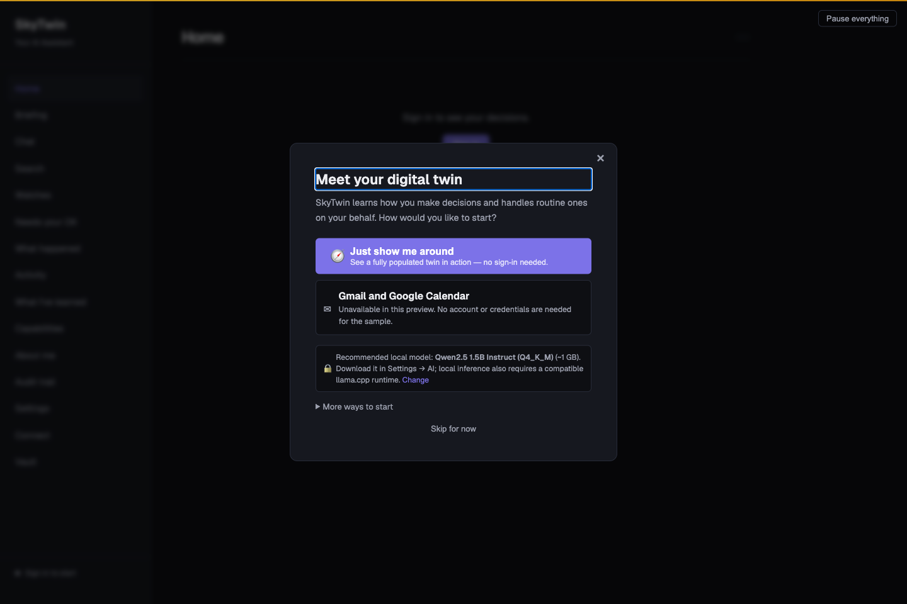
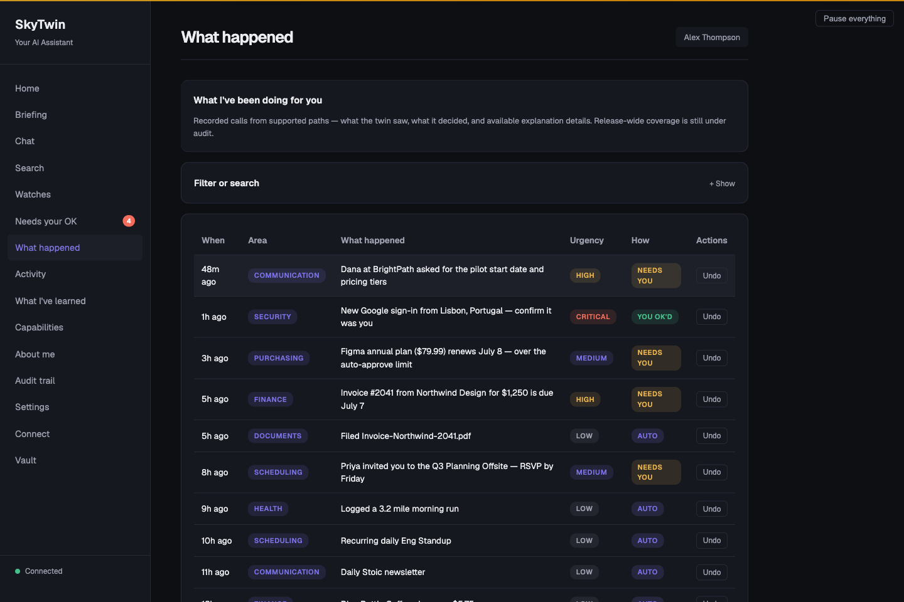
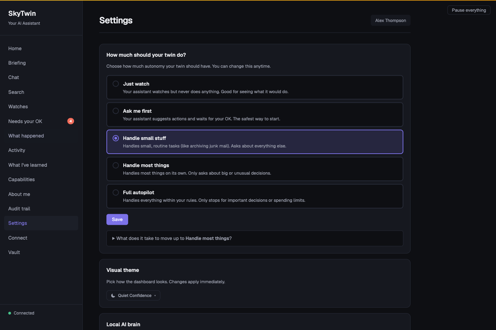

For people, not just builders
Fictional-data sampleTake the tour before you connect anything.
The safest way to understand SkyTwin today is to run its source-based sample, look at a made-up profile, and challenge the system's explanations. It is designed for inspection, not for handing it your inbox.
Before you start
You need a source checkout and a local development environment; the Start guide has the exact commands. You do not need an API key, a Gmail login, a Microsoft login, or a model download to take this tour. The recommended first run starts the dashboard and seeds fictional data locally.
- Do not treat the sample as a connected assistant. It is deliberately isolated.
- Do inspect the reasons. Look for the evidence, risk, urgency, policy result, and whether the system stopped to ask.
- Do use the pause control. It demonstrates that control is explicit and available from every page.
A five-minute walkthrough
- Open the dashboard. Choose Just show me around. This picks the fictional profile; it does not sign in or authorize any account.
- Read the briefing. It is a compact list of things that need attention in the fictional profile. This is a useful way to judge whether summaries are understandable before you trust any system with real information.
- Open “Needs your OK” and “What happened.” Compare items that need a person with items the sample marks as already handled. Read the category, urgency, and the reason shown for each entry.
- Visit Settings. Find the trust and spend controls, then find the pause control. The preview is an opportunity to ask whether the control model makes sense to you—not a prompt to turn on autonomy.
- Read the boundaries. Continue with the safety guide and inference guide. They distinguish local reasoning, explicit hosted-provider use, and the remote-attested route that SkyTwin intentionally does not offer yet.
What you will see
Captured September 16, 2026 from the current source development run after pnpm db:seed. All people, accounts, decisions, and messages shown are fictional demo content.




What comes next—and what does not
If the walkthrough is useful, you can read the architecture guide, operate a local source checkout using the operations guide, or build a constrained integration with the agent protocol. The project remains a developer preview: real Google and Microsoft account connections are unavailable on the supported surface; older unsigned installers are not the supported sample path; and signing, notarization, clean-machine proof, and release evidence are still public-beta gates.